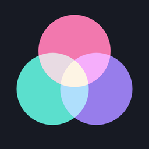

Bad Line
Soundboard för samtal du inte vill ha. Spela brus och dålig täckning i bakgrunden – och smit ur samtalet.

SynTrace
Upptäck hur dina sinnen kan vara sammankopplade. Tester för synestesi – svaren sparas bara i din egen enhet.

C-kortet
Plugga till C-körkortet – med YKB och ADR. Teori och övningsfrågor samlade på ett ställe.

Frontlinje: Göteborg
Ett skjutspel i webbläsaren där du försvarar det vackraste vi har: GAIS och Glenn Hysén.